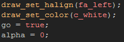
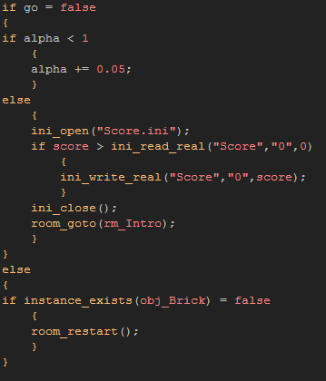
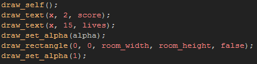
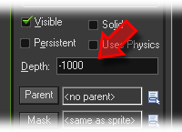
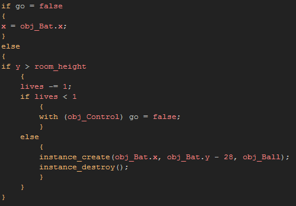

Tutorial
Page 12 of 13
Final Touches
The final touches to add to our game involve creating a transition for when the game ends, storing the high score and re-starting the room should the player clear all the bricks. These are all achieved from within
the control object that we made previously to draw the score, so open that now.
The first thing to do is change the Create Event so that it has this code:

As before, it prepares the graphics to draw and also initialises a couple of variables that will be used to contol the end of the game and the transitions. The object will now need a Step Event so open one
now and add the foillowing code to it:

The go variable will be set to false by the ball object (the code is at the end of this page) when the lives reach 0, which will trigger the transition effect and then move the player to the Intro room where they can start
the game again. However, just before this happens, the code opens the ini file with the high score and then compares the current score against it. If the current score is larger than the stored high score, it is stored over
the old one, ready to be beaten the next time you play!
While the go variable is true, the code will check to see if any instances of the brick object exists in the game, and when no-more are present, it will restart the room so that the player can continue playing and accumulating
points (remember, lives and score are global variables, so they are carried over from room to room unless they are explicitly reset by some object, as is done by the Intro object).
We also need to change slightly the control objects draw event to include the new transition effect too, like this:

It is also a good idea to set the depth of the object to a negative value and so ensure that it is drawn over everything else.

The last thing that is left for us to do is have the ball object tell the controller when the last life is lost and so we should change the Step Event of the ball object to have this code:

And that's about it! your first coded game is about finished and is a complete experience with an introduction screen, gameplay, and saved highscores! Well done! if you would like to see an example of this final game, there is
a finished gmz that can be imported into GameMaker in the assets folder for this tutorial.
Click on the Next button to go to the next page of the tutorial.